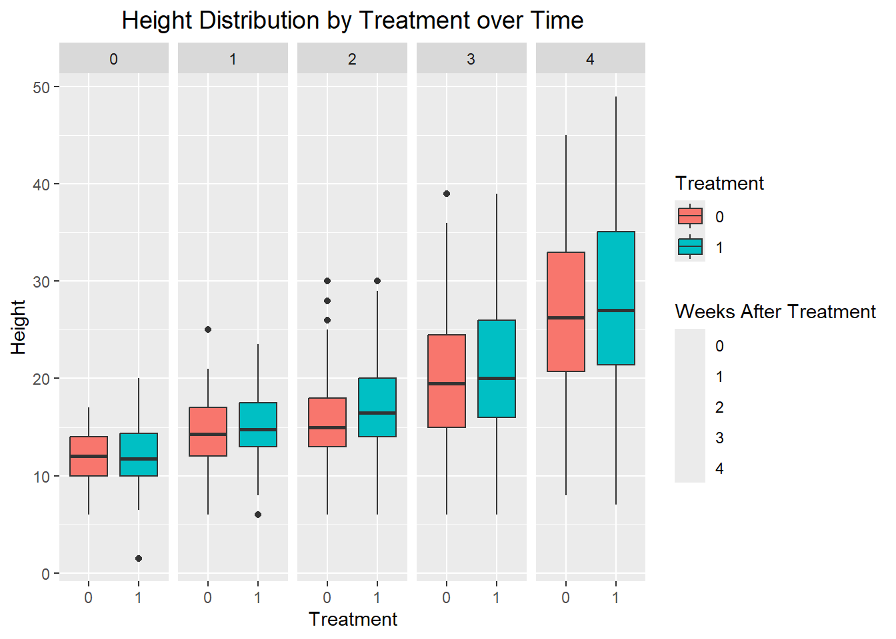
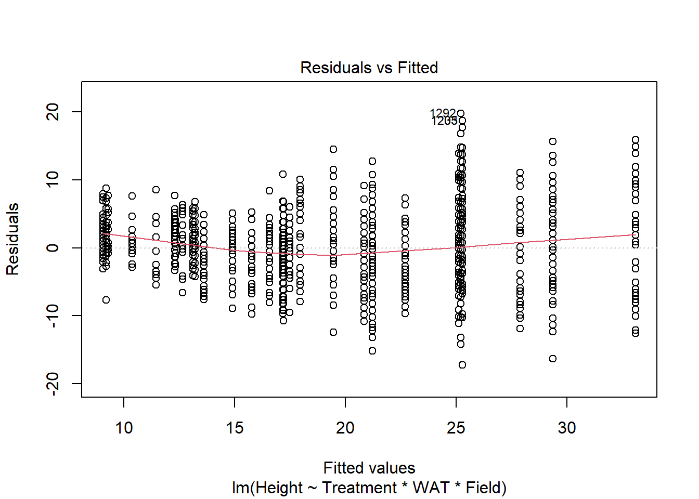
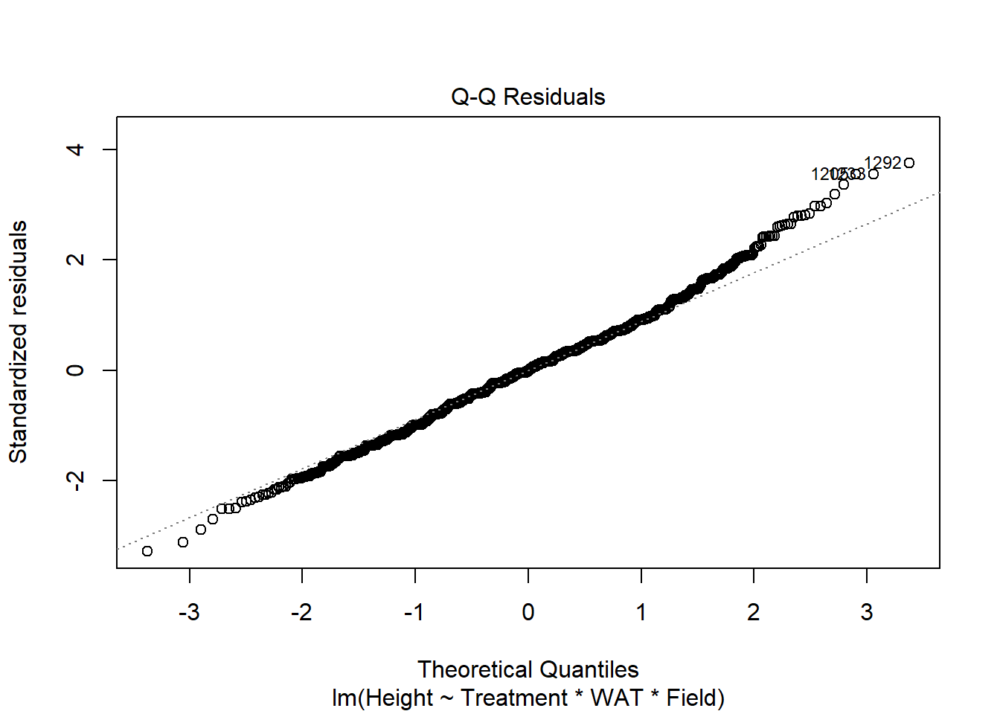
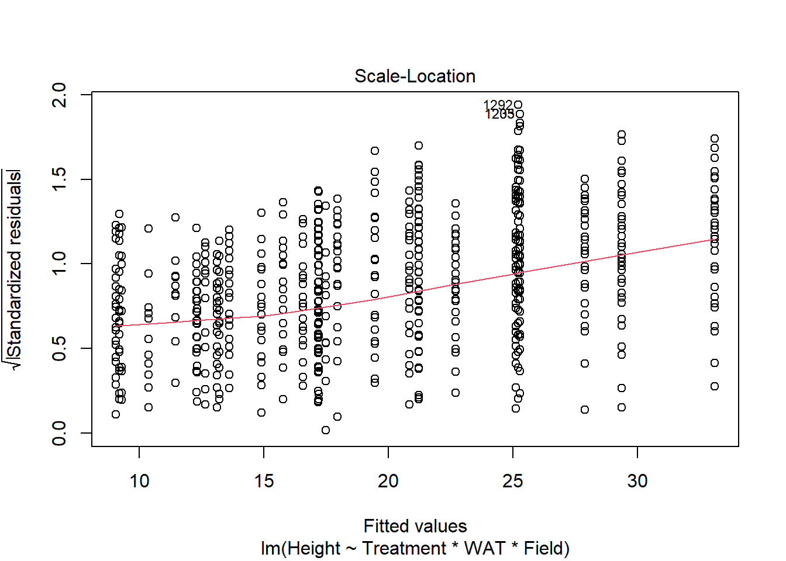
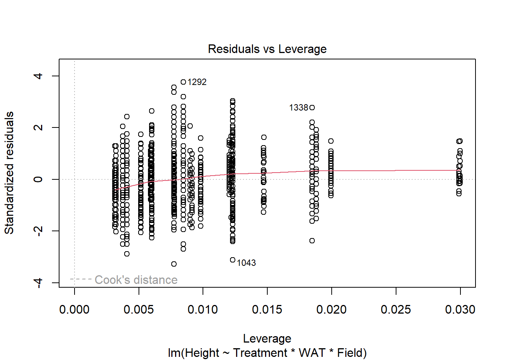
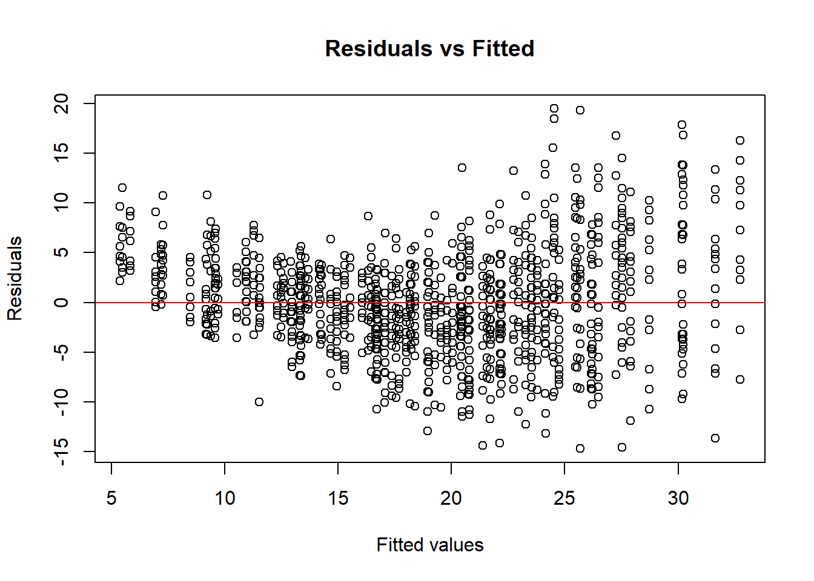
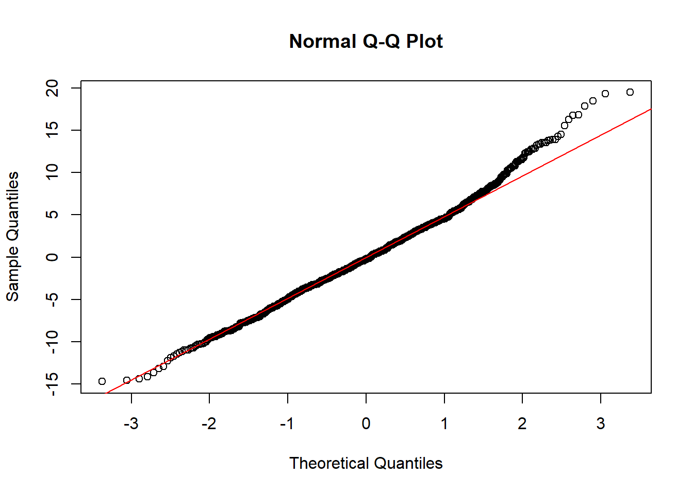
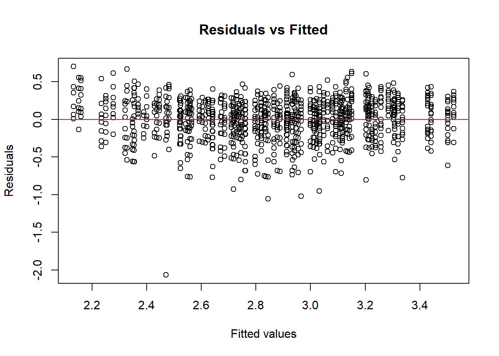
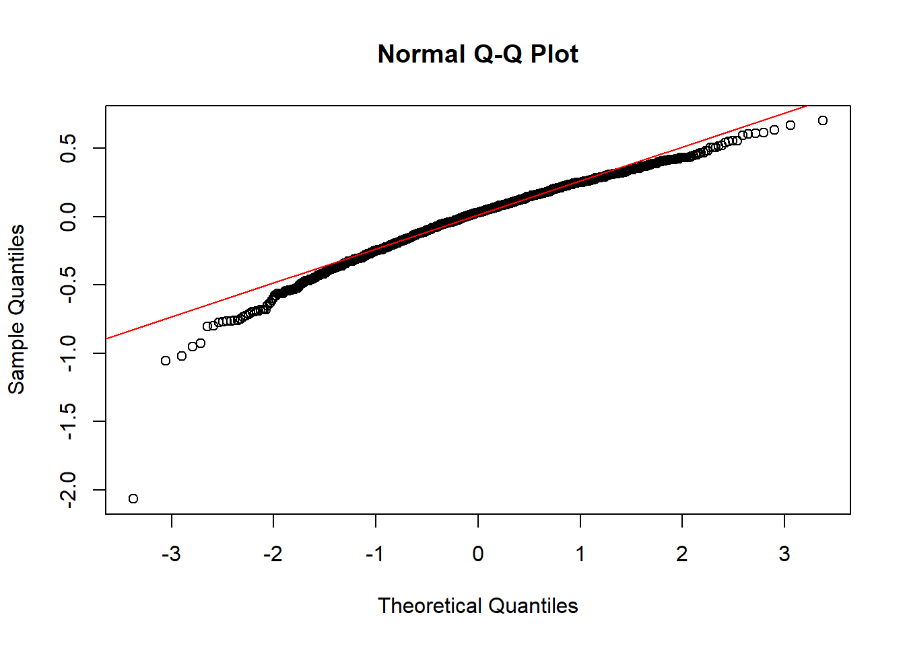

# Read the data
data <- read.csv("Data.csv", header=TRUE)Height Data Analysis
Initial Height Analysis
Loading and Subsetting Data
Reading in Data Source
Subsetting data to:
1) Only include values from unenclosed plants.
2) Convert predictor variables to factors with “levels”.
3) Remove rows with missing values (missing values = dead plant or sampling error).
# Subset to remove Enclosure values
data <- data[data$Enclosure == "0", ]
# Convert categorical variables to factors
data$Field <- as.factor(data$Field)
data$Plot <- as.factor(data$Plot)
data$Treatment <- as.factor(data$Treatment)
data$Enclosure <- as.factor(data$Enclosure)
# Remove rows with missing Height values
data <- data |>
filter(!is.na(Height))Exploratory Data Analysis
Calculating and Displaying mean soybean height for treatments across Weeks after application.
# Calculate mean Height for each Treatment and WAT combination
summary_data <- data |>
group_by(Treatment, WAT) |>
summarise(mean_height = mean(Height, na.rm = TRUE))`summarise()` has grouped output by 'Treatment'. You can override using the
`.groups` argument.# Displaying mean soybean height for treatments across Weeks after application
print(summary_data)# A tibble: 10 × 3
# Groups: Treatment [2]
Treatment WAT mean_height
<fct> <int> <dbl>
1 0 0 12.1
2 0 1 14.2
3 0 2 15.7
4 0 3 20.1
5 0 4 26.9
6 1 0 12.1
7 1 1 14.9
8 1 2 16.9
9 1 3 21.0
10 1 4 28.4Plotting “Mean Height by Treatment Over Time”

Box plot’s showing the distribution of height over time.

Simple Analysis
Fitting models for simple linear Regression
# Linear Regression for Height
# Null Model
lm_height_1 <- lm(formula = Height ~ Treatment, data = data)
# Partial Model
lm_height_2 <- lm(formula = Height ~ Treatment * WAT, data = data)
# Full Model
lm_height_3 <- lm(formula = Height ~ Treatment * WAT * Field, data = data)Choosing the best model
#ANOVA for differences in models
anova(lm_height_1, lm_height_2, lm_height_3)Analysis of Variance Table
Model 1: Height ~ Treatment
Model 2: Height ~ Treatment * WAT
Model 3: Height ~ Treatment * WAT * Field
Res.Df RSS Df Sum of Sq F Pr(>F)
1 1344 87902
2 1342 51876 2 36026 644.794 < 2.2e-16 ***
3 1334 37267 8 14609 65.368 < 2.2e-16 ***
---
Signif. codes: 0 '***' 0.001 '**' 0.01 '*' 0.05 '.' 0.1 ' ' 1# AIC to pick the best model
AIC(lm_height_1, lm_height_2, lm_height_3) df AIC
lm_height_1 3 9450.838
lm_height_2 5 8745.000
lm_height_3 13 8315.810Model lm_height_3 has the lowest AIC score.
summary(lm_height_3)
Call:
lm(formula = Height ~ Treatment * WAT * Field, data = data)
Residuals:
Min 1Q Median 3Q Max
-17.2903 -3.2155 -0.0876 3.1029 19.7837
Coefficients:
Estimate Std. Error t value Pr(>|t|)
(Intercept) 12.31979 0.74626 16.509 < 2e-16 ***
Treatment1 -0.01612 1.05537 -0.015 0.987814
WAT 4.26400 0.27667 15.412 < 2e-16 ***
Field2 -3.02230 1.18086 -2.559 0.010594 *
Field3 -3.25640 0.94515 -3.445 0.000588 ***
Treatment1:WAT 0.93382 0.39127 2.387 0.017142 *
Treatment1:Field2 1.09813 1.66934 0.658 0.510764
Treatment1:Field3 0.16590 1.33813 0.124 0.901351
WAT:Field2 -2.10073 0.43895 -4.786 1.89e-06 ***
WAT:Field3 -0.20726 0.35166 -0.589 0.555706
Treatment1:WAT:Field2 -0.82662 0.61972 -1.334 0.182472
Treatment1:WAT:Field3 -0.98977 0.49974 -1.981 0.047844 *
---
Signif. codes: 0 '***' 0.001 '**' 0.01 '*' 0.05 '.' 0.1 ' ' 1
Residual standard error: 5.285 on 1334 degrees of freedom
Multiple R-squared: 0.5772, Adjusted R-squared: 0.5738
F-statistic: 165.6 on 11 and 1334 DF, p-value: < 2.2e-16The Interaction between Treatment1 (Tannin application) and WAT (Week after Treatment) is significant at alpha = 0.05
Checking Model Assumptions
Using a QQ plot to look for non-normal distributions of the model’s plotted residuals
plot(lm_height_3)



Looking at the plotted Q-Q Residuals, data does appear to be slightly non-normal. With the size of out data set, non-normality is probably fine
Also, I don’t believe that simple linear regression is appropriate model for out data. Because of the three fields design plan, we should switch the variable Field to a random factor to block the data.
A better fitting model will provide more accurate results.
Continued Analysis with Model Adjustments
Mixed Effects Model
# Partial model without nested random effect
lmer_1 <- lmer(Height ~ Treatment + (1|Field), data = data)
# Full model without nested random effect
lmer_2 <- lmer(Height ~ Treatment * WAT + (1|Field), data = data)
# Partial model with nested random effects
lmer_3 <- lmer(Height ~ Treatment + (1|Field/Plot), data = data)
# Full model with nested random effects
lmer_4 <- lmer(Height ~ Treatment * WAT + (1|Field/Plot), data = data)
# Null model (only random effects)
lmer_null <- lmer(Height ~ 1 + (1|Field/Plot), data = data)Model Comparison using ANOVA
# Compare models using likelihood ratio test
anova(lmer_1, lmer_2, lmer_3, lmer_4, lmer_null)refitting model(s) with ML (instead of REML)Data: data
Models:
lmer_1: Height ~ Treatment + (1 | Field)
lmer_null: Height ~ 1 + (1 | Field/Plot)
lmer_3: Height ~ Treatment + (1 | Field/Plot)
lmer_2: Height ~ Treatment * WAT + (1 | Field)
lmer_4: Height ~ Treatment * WAT + (1 | Field/Plot)
npar AIC BIC logLik deviance Chisq Df Pr(>Chisq)
lmer_1 4 9261.2 9282.1 -4626.6 9253.2
lmer_null 4 9222.8 9243.7 -4607.4 9214.8 38.3890 0
lmer_3 5 9224.1 9250.1 -4607.0 9214.1 0.7794 1 0.3773
lmer_2 6 8401.2 8432.5 -4194.6 8389.2 824.8355 1 <2e-16 ***
lmer_4 7 8306.3 8342.7 -4146.1 8292.3 96.9337 1 <2e-16 ***
---
Signif. codes: 0 '***' 0.001 '**' 0.01 '*' 0.05 '.' 0.1 ' ' 1Model comparison using AIC
# AIC comparison
AIC(lmer_1, lmer_2, lmer_3, lmer_4, lmer_null) df AIC
lmer_1 4 9257.784
lmer_2 6 8402.144
lmer_3 5 9219.032
lmer_4 7 8305.265
lmer_null 4 9219.454Model comparison using BIC
# BIC comparison
BIC(lmer_1, lmer_2, lmer_3, lmer_4, lmer_null) df BIC
lmer_1 4 9278.604
lmer_2 6 8433.373
lmer_3 5 9245.056
lmer_4 7 8341.700
lmer_null 4 9240.274Summary of best fitted model!
# Full model with nested random effects
summary(lmer_4)Linear mixed model fit by REML. t-tests use Satterthwaite's method [
lmerModLmerTest]
Formula: Height ~ Treatment * WAT + (1 | Field/Plot)
Data: data
REML criterion at convergence: 8291.3
Scaled residuals:
Min 1Q Median 3Q Max
-2.8431 -0.6335 -0.0524 0.6243 3.7662
Random effects:
Groups Name Variance Std.Dev.
Plot:Field (Intercept) 3.508 1.873
Field (Intercept) 16.731 4.090
Residual 26.699 5.167
Number of obs: 1346, groups: Plot:Field, 20; Field, 3
Fixed effects:
Estimate Std. Error df t value Pr(>|t|)
(Intercept) 9.8038 2.4730 2.1920 3.964 0.0499 *
Treatment1 0.2999 1.0114 27.4220 0.297 0.7691
WAT 3.7380 0.1493 1324.1124 25.042 <2e-16 ***
Treatment1:WAT 0.2634 0.2124 1324.7925 1.240 0.2152
---
Signif. codes: 0 '***' 0.001 '**' 0.01 '*' 0.05 '.' 0.1 ' ' 1
Correlation of Fixed Effects:
(Intr) Trtmn1 WAT
Treatment1 -0.204
WAT -0.141 0.344
Trtmnt1:WAT 0.099 -0.486 -0.703Best Fitted Model is the full model with nested random effects
Model Diagnostics
Extracting model residuals
# Extract residuals
residuals <- resid(lmer_4)
fitted <- fitted(lmer_4)
# Plot residuals vs fitted values
plot(fitted, residuals, xlab = "Fitted values", ylab = "Residuals",
main = "Residuals vs Fitted")
abline(h = 0, col = "red")
Plotted Model Residuals vs Fitted Residuals deviation from a straight line indicates departure from normality assumption.
This invalidates our model results.
Normality in Residuals
qqnorm(residuals)
qqline(residuals, col = "red")
Deviation of Quantiles from a straight line at the ends indicate outliers.
A log transformation may better fit the data to out model and allow our data to meet our models normality assumption.
Response Log Transformation and Further Analysis
Mixed Effects Model with Log transformation
# Fit the mixed-effects model with log transformation on best model
lmer_log <- lmer(log(Height) ~ Treatment * WAT + (1|Field/Plot), data = data)AIC comparison between log and non-log model
AIC(lmer_4, lmer_log) df AIC
lmer_4 7 8305.2655
lmer_log 7 336.1356BIC comparison
BIC(lmer_4, lmer_log) df BIC
lmer_4 7 8341.6997
lmer_log 7 372.5698Log transformed model has drastically lower AIC and BIC.
Summary of Best fitting model
summary(lmer_log)Linear mixed model fit by REML. t-tests use Satterthwaite's method [
lmerModLmerTest]
Formula: log(Height) ~ Treatment * WAT + (1 | Field/Plot)
Data: data
REML criterion at convergence: 322.1
Scaled residuals:
Min 1Q Median 3Q Max
-7.7829 -0.5866 0.1130 0.6789 2.6415
Random effects:
Groups Name Variance Std.Dev.
Plot:Field (Intercept) 0.008894 0.09431
Field (Intercept) 0.046035 0.21456
Residual 0.070420 0.26537
Number of obs: 1346, groups: Plot:Field, 20; Field, 3
Fixed effects:
Estimate Std. Error df t value Pr(>|t|)
(Intercept) 2.379e+00 1.293e-01 2.180e+00 18.397 0.00197 **
Treatment1 2.344e-02 5.125e-02 2.788e+01 0.457 0.65099
WAT 1.954e-01 7.666e-03 1.324e+03 25.494 < 2e-16 ***
Treatment1:WAT 8.150e-03 1.091e-02 1.325e+03 0.747 0.45517
---
Signif. codes: 0 '***' 0.001 '**' 0.01 '*' 0.05 '.' 0.1 ' ' 1
Correlation of Fixed Effects:
(Intr) Trtmn1 WAT
Treatment1 -0.198
WAT -0.138 0.349
Trtmnt1:WAT 0.097 -0.493 -0.703No model significance between treatment with tannin and height variable, but a positive influence.
No model significance between tannin treatment and Week After Application, but a positive influence.
Statistical Significance for Week After Treatment.
Log Transformed Model Diagnostics
Extracting model residuals
residuals_log <- resid(lmer_log)
fitted_log <- fitted(lmer_log)
# Plot residuals vs fitted values
plot(fitted_log, residuals_log, xlab = "Fitted values", ylab = "Residuals",
main = "Residuals vs Fitted")
abline(h = 0, col = "red")
Log Transformation fixed normality assumption.
Normality in Residuals
qqnorm(residuals_log)
qqline(residuals_log, col = "red")
Quantiles seem to be better fit with log transformed model.
Log transformed mixed effects model seems to be the best fit model for analyzing the Height variable.